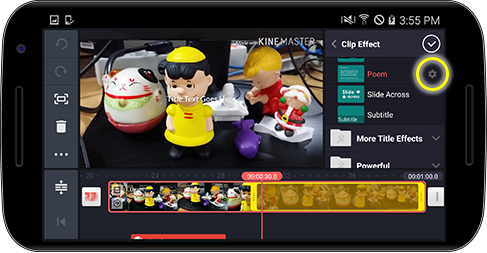

클립 효과
효과를 설정 할 클립에서
버튼을 눌러 원하는 효과를 선택 하신 후
버튼을 누르면 효과와 관련된 설정을 변경 할 수 있습니다.

 버튼을 누르면 효과와 관련된 설정을 변경 할 수 있습니다. 버튼을 누르면 효과와 관련된 설정을 변경 할 수 있습니다.
버튼을 누르면 효과와 관련된 설정을 변경 할 수 있습니다. 버튼을 누르면 효과와 관련된 설정을 변경 할 수 있습니다.